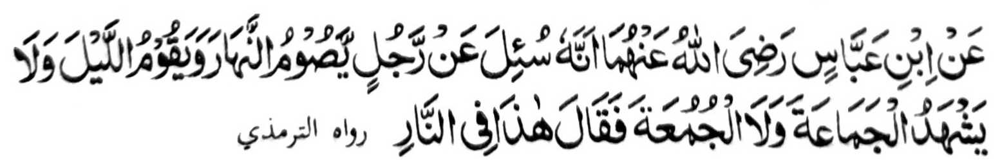

Miyakathitayan ko Ibn Abbas a mata-an na iniza-an sekaniyan makapantag sangkoto a tao a gi-i mamowasa ko kadaon-dao ago gi-i manambayang (sa Sunnat) ko kagagawi-i ogaid na di sekaniyan pezambayang sa Barajoma ago so Sambayang ko (alongan a) Juma'at. Pitharo iyan, "Giyoto na khadalem ko Naraka."
Giya ngkoto a tao, ko kababaloy niyan a Muslim, na phakamaradika bo ko Naraka, ogaid na antawa-a i matao ron sa kathay niyan. So da-a sabot iyan ko saba-ad ko gi-i mamaga Auliya go so manga Guro na tanto siran a mananamar ko Zikr go so Sunnat a Sambayang na taros a aya paratiyaya Iran non na giyanani piphaporo-an a simba, ogaid na di ran sisiyapen so Sambayang a Barajoma. Patot so kapipikira tano ron lalayon a da a tao a ba makaparoli sa maporo a pangkatan ko Agama inonta so kasongkada iran ko manga paparangayan o pekhababaya-an tano a Nabi (Sallallaho 'Alaihi Wasallam).
Miya-aloy sa Hadith a pimorka-an o Allah angka-iya a telo a manga tao: So Imam a tanto niyan a itetegei so di niyan kapephagimami ko manga tao ko inged a aden a di ran non ikasos-at; ika dowa na so babay a di ron masoso-at so karoma niyan; go so tao a pekhaneg iyan so Bang ogaid na da song sa Masjid ko kapezambayang sa Barajoma.